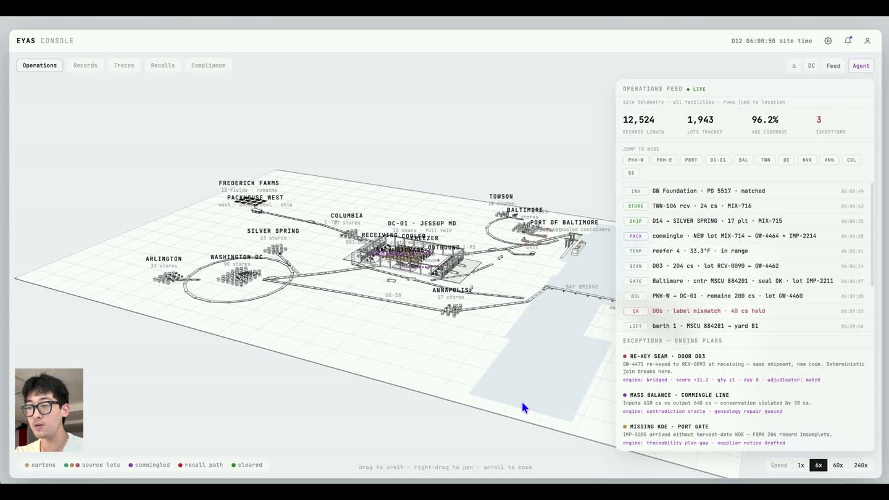

Study 06 / Conceptual Research Lab Web/brand Design
Maer Labs Design
conceptual web design for supply chain intelligence

Explore maersci.com

Study 06 / Conceptual Research Lab Web/brand Design
conceptual web design for supply chain intelligence

Explore maersci.com